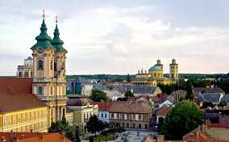
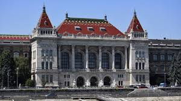

Egerben élek két testvérremmel és szüleimmel.Általános és középiskolába a városba jártam.A gimnáziumom az Egri Dobó István
Gimnázium volt, ahol a reál tagozatós osztály része lehettem.

Tanulmányaimat a Budapesti Műszaki és Gazdaságtudományi Egyetemen folytattam tovább, ahol most vagyok első éves gépészmérnök hallgató.Még pontosan nem tudom, hogy az egytem után mivel is szeretnék foglalkozni
de az biztos, hogy alamilyen autós dologgal, esetleg versenycsapatnál dolgozni.